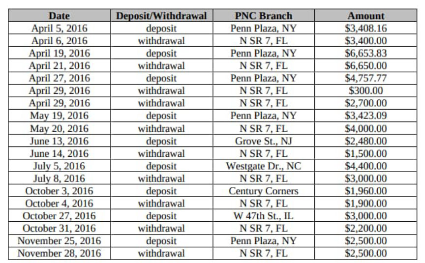
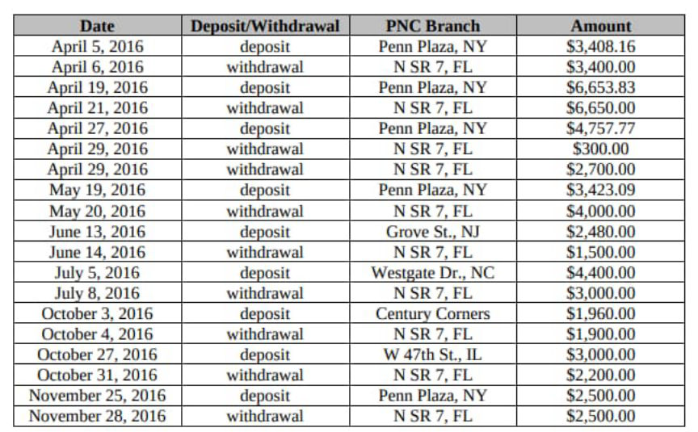

Florida Darkweb Vendor Forfeits $34 Million in Crypto
~5 min read | Published on 2022-04-04, tagged Cryptocurrency, Darkweb-Vendor, Forfeits using 1099 words.
A darkweb vendor in Florida forfeited $34 million worth of illicitly earned cryptocurrency.
According to an announcement from the U.S. Attorney’s Office for the Southern District of Florida, a judge entered a default judgment in favor of the United States against $34 million
worth of cryptocurrency seized from a darkweb vendor. The forfeiture includes 640.26804512 BTC, 640.2716098 Bitcoin Cash, 640.2715428 Bitcoin Gold, 640.2716043 Bitcoin S.V., and 919.30711258 ETH. According to prosecutors, the forfeiture is “one of the largest cryptocurrency forfeiture actions ever filed by the United States.” 
The forfeiture action results from an investigation into a prolific seller of hacked online account information on an unspecified darkweb marketplace. According to investigators, in January 2017, the vendor (identified only as “Moniker 1”) had completed more than 100,000 transactions. This number increased during the investigation. The completed transactions included several purchases by undercover law enforcement officers, including:
On or about January 29, 2016, an undercover law enforcement officer purchased ten (10) Netflix accounts usernames and passwords from Moniker 1 on a Dark Web marketplace for approximately 0.00132443 bitcoins; On or about April 20, 2016, an undercover law enforcement officer purchased one World Wrestling Entertainment account username and password from Moniker 1 on a Dark Web marketplace for approximately 0.01134 bitcoins; On or about September 14, 2016, an undercover law enforcement officer purchased sixty Uber accounts usernames and passwords from Moniker 1 on a Dark Web marketplace for approximately 0.0824 bitcoins; On or about March 7, 2017, an undercover law enforcement officer purchased three (3) Xfinity accounts usernames and passwords from Moniker 1 on a Dark Web marketplace for approximately 0.040 bitcoins; and On or about March 13, 2017, an undercover law enforcement officer purchased one (1) HBOGO account username and password and one (1) Showtime account username and password from Moniker 1 on a Dark Web marketplace for approximately 0.0118 bitcoins.
Court documents identified Alphabay as a market used by the defendant. The defendant admitted conducting “transactions using Bitcoin, Ethereum, and other cryptocurrencies” on Silk Road, Agora, Nucleus, AlphaBay, Dream Market, Abraxas, Sheep, and Evolution. I think only Alphabay and Dream meet the conditions for the market where investigators conducted undercover purchases.
[img=]The defendant transacted on several markets but specifically admitted selling only on AlphaBay.[/img]
“In or around 2016, law enforcement agents identified two residences in Florida linked to Moniker 1 after Moniker 1 provided the addresses as the shipping address when he or she previously purchased narcotics from Dark Web marketplaces,” according to court documents.
The person associated with the shipping addresses lived at a residence in Parkland, Florida. Investigators identified the resident. Then, presumably using a pen register, investigators monitored internet traffic to and from the Comcast I.P. address associated with the residence.
“Internet traffic to and from the Comcast I.P. address between in or around December 2016 and March 2017 revealed numerous internet connections from the Parkland Residence on the TOR network. In addition, the internet traffic data showed correlations between when the TOR network was accessed at the Parkland Residence and when messages were received from Moniker 1 by the law enforcement officer(s) making the undercover purchases.”
Police identified the defendant’s PNC bank account and obtained copies of their transaction history. The transactions made by the defendant were “consistent with that of a Dark Web vendor converting virtual currency into cash using LocalBitcoins.com,” according to court documents.

On May 16, 2017, law enforcement agents executed a federal search warrant for the defendant’s residence in Parkland. The items seized by police included a laptop owned by the defendant. The seizures of the defendant’s various cryptocurrency wallets took place from May 2017 through June 2017.
On May 16, 2017, police seized 919.30711258 ETH from the Ethereum wallet address <code>0x71949d87258c4ca6827730c337f80907d73c7800</code>. In June 2017, police seized 418.51177 BTC from the Bitcoin wallet address <code>12EZr5x8mFpxS6ypNobhPXmyj4BbRkm6GW</code> and 221.76 BTC “formerly held” in the same wallet.
Blockchain analysis revealed that approximately ninety-six percent of the Bitcoin in the defendant’s wallet came from darkweb marketplaces or exchanges. Over fifty percent of outgoing transfers were made to peer-to-peer exchanges, including LocalBitcoins.com.
“Individual 1 told law enforcement agents that he or she obtained the ether in the Ethereum 7800 Wallet by converting bitcoins earned from unlawful online Dark Web transactions involving the sale of hacked online account information. Individual 1 converted the bitcoins to ether using a virtual currency exchange that did not require users to provide personal identifying information until in or around 2019, thus, providing an additional layer of anonymity.”
Based on information from other court documents, ShapeShift appears to be the exchange referenced above.
“Law enforcement agents were able to confirm that Individual 1 exchanged bitcoins obtained from Dark Web marketplaces for the ether held in the Ethereum 7800 Wallet through an analysis of the blockchain history for both the Ethereum 7800 Wallet and Bitcoin m6GW Wallet, the transactional activity at Virtual Currency Exchange 1, and historical exchange rates for the transaction dates.”
“A review of the Ethereum blockchain history showed that approximately 919.30711258 ether was deposited into the Ethereum 7800 Wallet via nine (9) transactions between on or about March 16 and 17, 2017. These deposits were traced back to a known Ethereum address associated with Virtual Currency Exchange 1.
“Further, a review of the blockchain Bitcoin history showed that approximately thirty-two (32) bitcoins were sent via nine (9) transactions from the Bitcoin m6GW Wallet to other Bitcoin addresses, and from those addresses, transfers were made to Virtual Currency Exchange 1.”
“When these blockchain histories were compared with historical exchange rates, the same transfer amounts for the nine (9) transactions were shown on each respective blockchain, further confirming that bitcoins from the Bitcoin m6GW Wallet were converted to the ether coins eventually seized from the Ethereum 7800 Wallet.”
The defendant told investigators that they had “only sold hacked online account information on AlphaBay.” With the defendant’s cooperation, law enforcement officers withdrew 2.65995166 BTC from the defendant’s vendor account on AlphaBay.
In 2021, the defendant signed a consent to forfeiture. On November 3, 2021, the government published a notice about the action on forfeiture.gov. Nobody filed a claim against the action (the defendant was the only claimant). As a result, U.S. District Court Judge Rodney Smith entered a default judgment in favor of the United States, which forfeited the defendant’s right, title, and interest in the seized cryptocurrency.
According to the press release, this case was the result of a so-called “Operation TORnado,” which is apparently a “joint investigation that stems from the ongoing efforts by OCDETF.”
The complaint for forfeiture lists the value of the seized cryptocurrency as $47 million. The $34 million number appears in the USAO’s announcement. archive.is/archive.org/justice.gov
Verified Complaint for Forfeiture in rem: pdf
According to an announcement from the U.S. Attorney’s Office for the Southern District of Florida, a judge entered a default judgment in favor of the United States against $34 million
The majority of Bitcoin sent to the defendant's wallet came from a darkweb market.
The forfeiture action results from an investigation into a prolific seller of hacked online account information on an unspecified darkweb marketplace. According to investigators, in January 2017, the vendor (identified only as “Moniker 1”) had completed more than 100,000 transactions. This number increased during the investigation. The completed transactions included several purchases by undercover law enforcement officers, including:
Court documents identified Alphabay as a market used by the defendant. The defendant admitted conducting “transactions using Bitcoin, Ethereum, and other cryptocurrencies” on Silk Road, Agora, Nucleus, AlphaBay, Dream Market, Abraxas, Sheep, and Evolution. I think only Alphabay and Dream meet the conditions for the market where investigators conducted undercover purchases.
[img=]The defendant transacted on several markets but specifically admitted selling only on AlphaBay.[/img]
“In or around 2016, law enforcement agents identified two residences in Florida linked to Moniker 1 after Moniker 1 provided the addresses as the shipping address when he or she previously purchased narcotics from Dark Web marketplaces,” according to court documents.
The person associated with the shipping addresses lived at a residence in Parkland, Florida. Investigators identified the resident. Then, presumably using a pen register, investigators monitored internet traffic to and from the Comcast I.P. address associated with the residence.
“Internet traffic to and from the Comcast I.P. address between in or around December 2016 and March 2017 revealed numerous internet connections from the Parkland Residence on the TOR network. In addition, the internet traffic data showed correlations between when the TOR network was accessed at the Parkland Residence and when messages were received from Moniker 1 by the law enforcement officer(s) making the undercover purchases.”
Police identified the defendant’s PNC bank account and obtained copies of their transaction history. The transactions made by the defendant were “consistent with that of a Dark Web vendor converting virtual currency into cash using LocalBitcoins.com,” according to court documents.

On May 16, 2017, law enforcement agents executed a federal search warrant for the defendant’s residence in Parkland. The items seized by police included a laptop owned by the defendant. The seizures of the defendant’s various cryptocurrency wallets took place from May 2017 through June 2017.
On May 16, 2017, police seized 919.30711258 ETH from the Ethereum wallet address <code>0x71949d87258c4ca6827730c337f80907d73c7800</code>. In June 2017, police seized 418.51177 BTC from the Bitcoin wallet address <code>12EZr5x8mFpxS6ypNobhPXmyj4BbRkm6GW</code> and 221.76 BTC “formerly held” in the same wallet.
Blockchain analysis revealed that approximately ninety-six percent of the Bitcoin in the defendant’s wallet came from darkweb marketplaces or exchanges. Over fifty percent of outgoing transfers were made to peer-to-peer exchanges, including LocalBitcoins.com.
“Individual 1 told law enforcement agents that he or she obtained the ether in the Ethereum 7800 Wallet by converting bitcoins earned from unlawful online Dark Web transactions involving the sale of hacked online account information. Individual 1 converted the bitcoins to ether using a virtual currency exchange that did not require users to provide personal identifying information until in or around 2019, thus, providing an additional layer of anonymity.”
Based on information from other court documents, ShapeShift appears to be the exchange referenced above.
“Law enforcement agents were able to confirm that Individual 1 exchanged bitcoins obtained from Dark Web marketplaces for the ether held in the Ethereum 7800 Wallet through an analysis of the blockchain history for both the Ethereum 7800 Wallet and Bitcoin m6GW Wallet, the transactional activity at Virtual Currency Exchange 1, and historical exchange rates for the transaction dates.”
“A review of the Ethereum blockchain history showed that approximately 919.30711258 ether was deposited into the Ethereum 7800 Wallet via nine (9) transactions between on or about March 16 and 17, 2017. These deposits were traced back to a known Ethereum address associated with Virtual Currency Exchange 1.
“Further, a review of the blockchain Bitcoin history showed that approximately thirty-two (32) bitcoins were sent via nine (9) transactions from the Bitcoin m6GW Wallet to other Bitcoin addresses, and from those addresses, transfers were made to Virtual Currency Exchange 1.”
“When these blockchain histories were compared with historical exchange rates, the same transfer amounts for the nine (9) transactions were shown on each respective blockchain, further confirming that bitcoins from the Bitcoin m6GW Wallet were converted to the ether coins eventually seized from the Ethereum 7800 Wallet.”
The defendant told investigators that they had “only sold hacked online account information on AlphaBay.” With the defendant’s cooperation, law enforcement officers withdrew 2.65995166 BTC from the defendant’s vendor account on AlphaBay.
In 2021, the defendant signed a consent to forfeiture. On November 3, 2021, the government published a notice about the action on forfeiture.gov. Nobody filed a claim against the action (the defendant was the only claimant). As a result, U.S. District Court Judge Rodney Smith entered a default judgment in favor of the United States, which forfeited the defendant’s right, title, and interest in the seized cryptocurrency.
According to the press release, this case was the result of a so-called “Operation TORnado,” which is apparently a “joint investigation that stems from the ongoing efforts by OCDETF.”
Verified Complaint for Forfeiture in rem: pdf